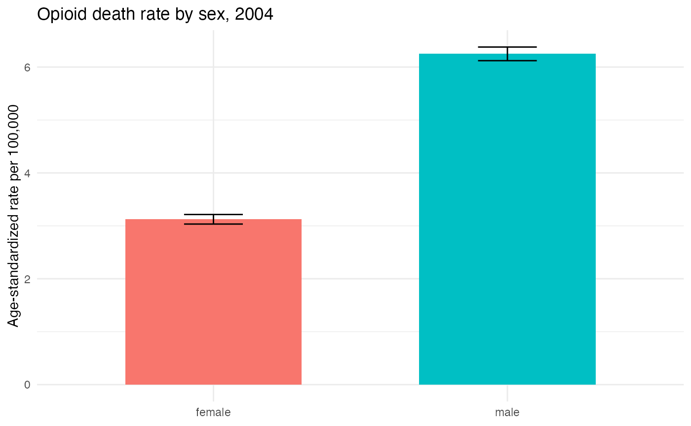

End-to-end on real public-use data (2004)
Source:vignettes/real-data-end-to-end.Rmd
real-data-end-to-end.RmdThe other vignettes use small synthetic frames to keep each step legible. This one runs the whole pipeline on a real file, start to finish, and reports the actual numbers – from raw fixed-width records to an age-standardized opioid death rate by sex, for 2004.
The file is the NCHS public-use Multiple Cause of
Death (MCOD) file for 2004, so no restricted-data agreement is needed.
2004 is the last public-use year that still carries county geography
(2005 onward suppress it), which makes it a DUA-free stand-in for
developing county-level code before you obtain the restricted All-County
files – see the note on import_mcod_fwf() in
vignette("getting-started").
The heavy steps – reading the ~1.2 GB fixed-width file and flagging
all 2.4 million records – are shown with eval = FALSE,
because the file is not bundled with the package and cannot be
downloaded during a package check. The counts they produce are
reproduced below as a small table, so the rate half of the pipeline (the
part that uses only narcan’s bundled population data) runs
live on the real 2004 counts.
Get the file
Download the public-use MCOD fixed-width file for 2004 (distributed
by NCHS and mirrored by NBER as mort2004us.zip). Unzip it
and pass the extracted .dat to
import_mcod_fwf(), which reads the raw fixed-width layout –
the archive’s internal filename may differ from the placeholder below,
so point the call at whatever the unzip produces. narcan’s
download_mcod_csv() / download_mcod_dta()
fetch the CSV/Stata versions instead, which are a different on-ramp not
used here.
raw <- import_mcod_fwf("mort2004us.dat", year = 2004, tier = "public")
nrow(raw)
#> [1] 2401400import_mcod_fwf() returns every column in the restricted
layout order; for 2004 the public and restricted tiers are effectively
identical (the one restricted-only field, racer40, sits
past the end of the public record and comes back
all-NA).
Flag the records
Keep US residents, collapse the 20 contributory-cause columns into
f_records_all, then run the ISW7 flag pipeline. Each step
keys on year = 2004 to select the ICD-10 coding era.
flagged <- raw |>
subset_residents() |> # restatus 1-3; drops non-residents
unite_records(year = 2004) |> # builds f_records_all
flag_drug_deaths(year = 2004) |>
flag_opioid_deaths(year = 2004) |>
flag_opioid_types(year = 2004)Here are the national totals that pipeline produces on the real 2004 file:
totals <- data.frame(
quantity = c("US resident deaths", "drug deaths (ISW7)",
"opioid deaths (ISW7)", "heroin, T40.1", "synthetic, T40.4"),
n = c(2397615L, 27393L, 13756L, 1878L, 1664L)
)
totals
#> quantity n
#> 1 US resident deaths 2397615
#> 2 drug deaths (ISW7) 27393
#> 3 opioid deaths (ISW7) 13756
#> 4 heroin, T40.1 1878
#> 5 synthetic, T40.4 1664narcan’s drug_death is the ISW7 multiple-cause
definition – a drug-poisoning underlying cause and a
drug T-code – so it runs a little below the CDC WONDER “drug overdose”
headline, which keys on the underlying cause alone. The two are close
but not identical; see
vignette("classifying-overdose-deaths") for the exact
rules.
Recode age and sex
Standardizing by age needs age in the standard population’s 5-year
bins, and the population join needs sex as
"male"/"female". Sex coding changed at data
year 2003 (numeric 1/2 before,
"M"/"F" after), so
categorize_sex() takes year.
convert_ager27() needs no year – the 1-27 AGER27 scheme is
stable across eras; vignette("demographic-recodes") covers
both in full.
flagged$sex <- categorize_sex(flagged$sex, year = 2004) # "M"/"F" -> male/female
flagged <- convert_ager27(flagged) # ager27 -> 5-year `age`Aggregate to counts
Collapse the flagged records to opioid-death counts by
year x age x sex. In a real script this is the line that
turns 2.4 million records into the 36-row table below.
agg <- flagged |>
dplyr::filter(!is.na(age), !is.na(sex)) |>
dplyr::group_by(year, age, sex) |>
dplyr::summarize(opioid_deaths = sum(opioid_death), .groups = "drop")The !is.na() filter drops the four opioid deaths with an
unstated age (none had an unstated sex in this file), so the stratified
table sums to 13,752 – four short of the 13,756 national total above.
Deaths with a missing stratifier cannot be placed in an age-sex
cell.
That aggregate is small enough to reproduce verbatim – these are the real 2004 opioid-death counts by 5-year age group and sex:
agg <- tibble::tribble(
~age, ~sex, ~opioid_deaths,
0L, "female", 11L, 5L, "female", 1L, 10L, "female", 12L,
15L, "female", 86L, 20L, "female", 247L, 25L, "female", 301L,
30L, "female", 408L, 35L, "female", 587L, 40L, "female", 910L,
45L, "female", 910L, 50L, "female", 569L, 55L, "female", 293L,
60L, "female", 139L, 65L, "female", 63L, 70L, "female", 36L,
75L, "female", 35L, 80L, "female", 19L, 85L, "female", 14L,
0L, "male", 15L, 5L, "male", 1L, 10L, "male", 16L,
15L, "male", 368L, 20L, "male", 895L, 25L, "male", 948L,
30L, "male", 916L, 35L, "male", 1139L, 40L, "male", 1593L,
45L, "male", 1538L, 50L, "male", 984L, 55L, "male", 432L,
60L, "male", 141L, 65L, "male", 60L, 70L, "male", 27L,
75L, "male", 16L, 80L, "male", 9L, 85L, "male", 13L
)
agg$year <- 2004LOne subtlety matters for standardization. The standard population spans all 18 age groups, so every age-sex cell needs its denominator even when it saw zero opioid deaths – otherwise the age standard is silently truncated. (In 2004 every cell happens to have at least one opioid death, but this step is what protects the rate when one does not.) Build the full grid and fill any empty cells with 0:
Denominators and the rate
From here it is the standard rate pipeline (see
vignette("age-standardized-rates")), running live on the
real counts. Use the SEER bridged-race denominators
(race_scheme = "bridged"), which cover 2004 as one
internally consistent series; race is not a by_var, so
pop is the all-race total per
year x age x sex.
counts <- add_pop_counts(counts, by_vars = c("year", "age", "sex"),
race_scheme = "bridged")
counts <- add_std_pop(counts, std_cat = "s204", by_vars = "age")
counts <- calc_asrate_var(counts, new_name = opioid,
death_col = opioid_deaths, pop_col = pop)
head(counts[order(counts$age, counts$sex),
c("age", "sex", "opioid_deaths", "pop", "opioid_rate")])
#> age sex opioid_deaths pop opioid_rate
#> 1 0 female 11 9675391 0.11369050
#> 2 0 male 15 10110494 0.14836070
#> 19 5 female 1 9503231 0.01052274
#> 20 5 male 1 9951006 0.01004924
#> 3 10 female 12 10443706 0.11490174
#> 4 10 male 16 10967974 0.14587927calc_stdrate_var() collapses the 18 age bins into one
age-standardized rate per sex, reweighting to the US 2000 standard. A
95% Wald interval follows from the returned variance.
std <- calc_stdrate_var(counts, opioid_rate, opioid_var, year, sex)
std <- as.data.frame(std)
std$lower <- std$opioid_rate - 1.96 * sqrt(std$opioid_var)
std$upper <- std$opioid_rate + 1.96 * sqrt(std$opioid_var)
std[, c("year", "sex", "opioid_rate", "lower", "upper")]
#> year sex opioid_rate lower upper
#> 1 2004 female 3.123972 3.033772 3.214171
#> 2 2004 male 6.249828 6.121136 6.378520In 2004 the age-standardized opioid death rate was about 6.2 per 100,000 among men and 3.1 among women – roughly a two-to-one gap, standardized to the same age structure, so the difference is in death rates and not in age composition. These are the real figures the pipeline recovers from the public-use file, computed live in the chunk above.
library(ggplot2)
ggplot(std, aes(x = sex, y = opioid_rate, fill = sex)) +
geom_col(width = 0.6) +
geom_errorbar(aes(ymin = lower, ymax = upper), width = 0.2) +
labs(x = NULL, y = "Age-standardized rate per 100,000",
title = "Opioid death rate by sex, 2004") +
theme_minimal() +
theme(legend.position = "none")
Age-standardized opioid death rate per 100,000 by sex, 2004 public-use MCOD (US 2000 standard). Bars are 95% confidence intervals.
Caveats
County geography on the public file. County FIPS are populated only for counties with a population of at least 100,000; smaller (disproportionately rural) counties collapse to a residual code. The 2004 stand-in exercises large-county behavior only – the restricted All-County files carry every county.
Definition. These counts use narcan’s ISW7
multiple-cause definitions
(vignette("classifying-overdose-deaths")), which differ
modestly from the underlying-cause-only counts CDC WONDER reports.
Small-count intervals. The Wald interval above is fine for these well-populated national cells but under-covers small strata; use a gamma-based interval (Fay and Feuer, Stat Med 1997) for sparse sub-national or fine demographic cells.
Cross-era comparability. A 2004 rate is directly comparable to other ICD-10 years (1999+), but not across the 1999 ICD-9-to-ICD-10 revision without a comparability adjustment, nor across a change in the denominator race scheme.
See also
-
vignette("getting-started")– the package overview and the import on-ramp. -
vignette("classifying-overdose-deaths")– the ISW7 flag rules used here. -
vignette("population-denominators")– the denominator schemes and the join used in the rate step. -
vignette("age-standardized-rates")– the rate pipeline in more detail. -
vignette("demographic-recodes")– the age/sex/race recoders across eras. -
vignette("geography-fips")– more on the county-FIPS caveat noted above.